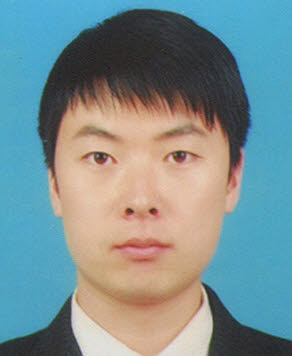
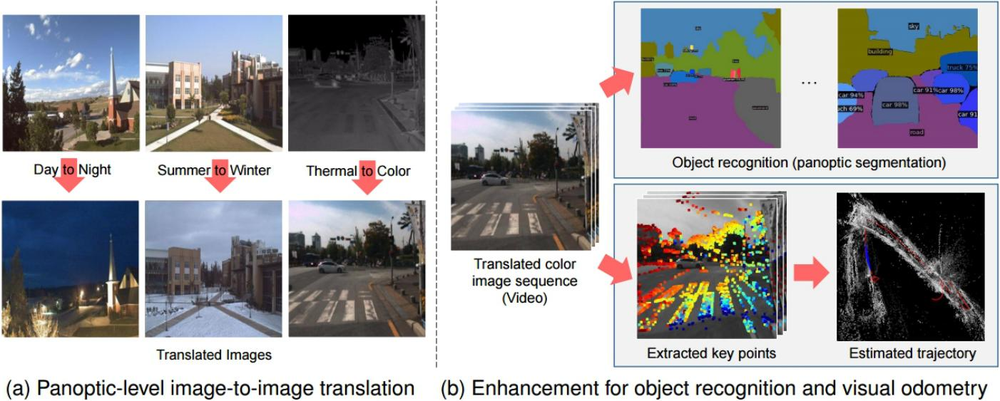
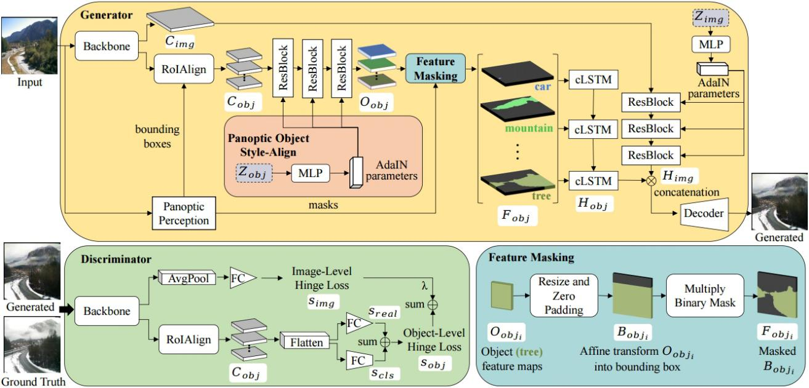
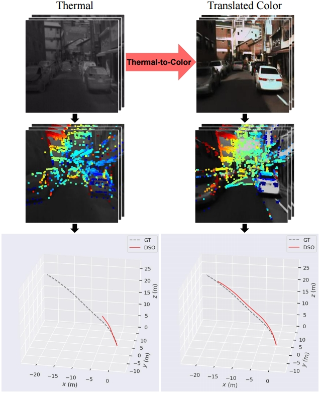
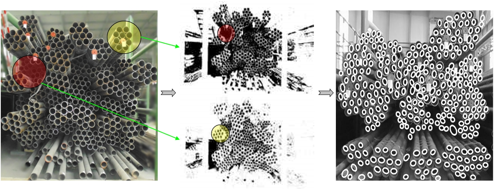
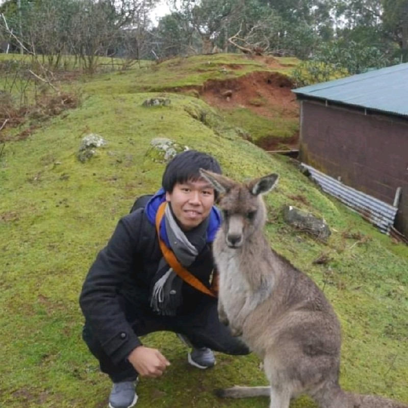
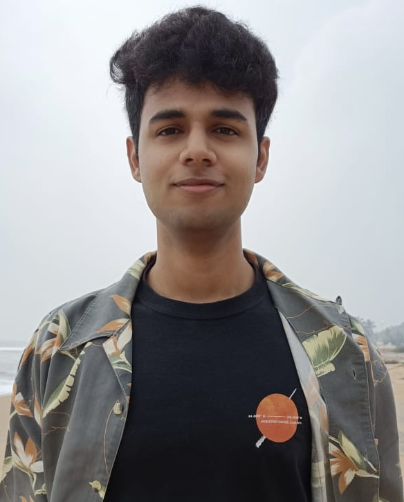

|  |
Liyun Zhang
Ph.D. Candidate
Takemura Lab |

Biography
I am currently a Ph.D. candidate (will graduate in 2024.3) at Takemura Lab, Osaka University, advised by Prof. Haruo Takemura and Prof. Photchara Ratsamee. I am a visiting scholar at  Georgia Tech advised by Prof. Animesh Garg from 2023.2. I was a research intern at Sysmex Corporation, and worked at Huawei, ZTE Corporation, etc.
Georgia Tech advised by Prof. Animesh Garg from 2023.2. I was a research intern at Sysmex Corporation, and worked at Huawei, ZTE Corporation, etc.
I'm interested in Multimodal Reasoning, Embodied AI, Interactive Robot Learning research fields.
Openings: I'm open to collaboration in research projects including "vision and language models used in robotics" and "robotic foundation models".
• I am looking for a research position at a university's or corporation's labs, including a postdoc, researcher and assistant professor, etc.
News
• 2023.2: I start a research collaboration with Georgia Tech advised by Prof. Animesh Garg.
• 2023.1: One paper about Image Translation accepted to WACV 2023.
• 2022.11: One paper about Robotic Perception accepted to SSRR 2022.
Publications
# Corresponding author; * Equal contribution|
|
|
|

|
Panoptic-Level Image-to-Image Translation for Object Recognition and Visual Odometry Enhancement
Liyun Zhang, Photchara Ratsamee, Zhaojie Luo, Yuki Uranishi, Manabu Higashida, Haruo Takemura. IEEE Transactions on Circuits and Systems for Video Technology (TCSVT), 2023. [Paper] [Code,Data] |
|
|
|
|

|
Panoptic-aware Image-to-Image Translation
Liyun Zhang, Photchara Ratsamee, Bowen Wang, Zhaojie Luo, Yuki Uranishi, Manabu Higashida, Haruo Takemura. IEEE/CVF Winter Conference on Applications of Computer Vision (WACV), 2023. [Paper] [Code,Data] [DOI] |
|
|
|
|

|
Thermal-to-Color Image Translation for Enhancing Visual Odometry of Thermal Vision
Liyun Zhang, Photchara Ratsamee, Yuki Uranishi, Manabu Higashida, Haruo Takemura. IEEE International Symposium on Safety, Security, and Rescue Robotics (SSRR), 2022. [Paper] |
|
|
|
|

|
Uneven Illumination Image Segmentation Based on Multi-threshold S-F
Liyun Zhang, Nanyan Liu, Yuanbin Hou, Xiaojian Liu. Opto-Electronic Engineering (OEE), 2014. [Paper] |
|
|
|
|
|
Teams
Embodied Reasoning:
 Animesh Garg Assistant Professor (Georgia Tech) |
Jason Orlosky Associate Professor (Augusta University & Osaka University) |
 Photchara Ratsamee Lecturer (Osaka Institute of Technology & Osaka University) |
 Masato Kobayashi Assistant Professor (Osaka University) |
|
 Atharva Mete Master (Georgia Tech) |
Teaching & Working
| 2023.2-2024.3 | Visiting Researcher | Georgia Tech |
| 2023.7-2024.2 | Research Assistant | Osaka University |
| 2021.5-2023.3 | Specially Appointed Researcher | Sysmex Corporation |
| 2021.4-2021.9 | Teaching Assistant | Osaka University |
| 2020.10-2021.3 | Research Assistant | Osaka University |
| 2017.12-2018.9 | Senior Embedded Software Engineer | ZTE Corporation |
| 2016.11-2017.3 | Software R&D Engineer | Huawei |
| 2015.7-2017.12 | Embedded Software Engineer | Huaqin Technology |
Invited Talks
| In Progress |
Recent Community Services
Reviewer Service
| IEEE Transactions on Circuits and Systems for Video Technology (TCSVT) | 2023 |
| IEEE/CVF Winter Conference on Applications of Computer Vision (WACV) | 2023 |
| Conference on Computer Vision and Pattern Recognition (CVPR) | 2022 |
| European Conference on Computer Vision (ECCV) | 2022 |